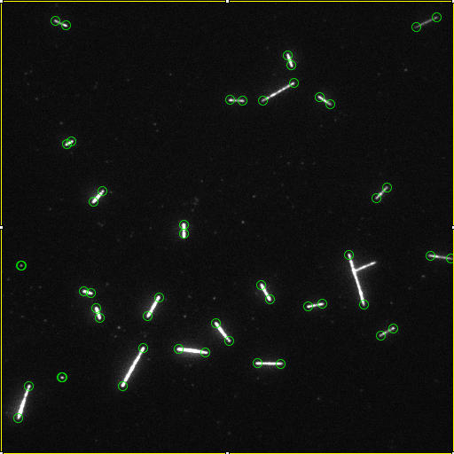

This is a read-only version of imagej.net, available during the transition to a new site.
Please direct any questions or issues to this Image.sc Forum thread.
Thank you for your patience as we improve the website!
Please direct any questions or issues to this Image.sc Forum thread.
Thank you for your patience as we improve the website!
File:Mserseeddet.png

Size of this preview: 800 × 600 pixels. Other resolution: 320 × 240 pixels.
Original file (960 × 720 pixels, file size: 234 KB, MIME type: image/png)
File history
Click on a date/time to view the file as it appeared at that time.
| Date/Time | Thumbnail | Dimensions | User | Comment | |
|---|---|---|---|---|---|
| current | 09:39, 20 July 2017 | | 960 × 720 (234 KB) | VarunKapoor (talk | contribs) | |
| 09:34, 20 July 2017 |  | 960 × 720 (234 KB) | VarunKapoor (talk | contribs) | ||
| 08:27, 20 July 2017 |  | 512 × 512 (199 KB) | VarunKapoor (talk | contribs) |
- You cannot overwrite this file.
File usage
There are no pages that link to this file.

{kind=link}
{kind=link}
{kind=link}
{kind=link}
{kind=link}
{kind=link}